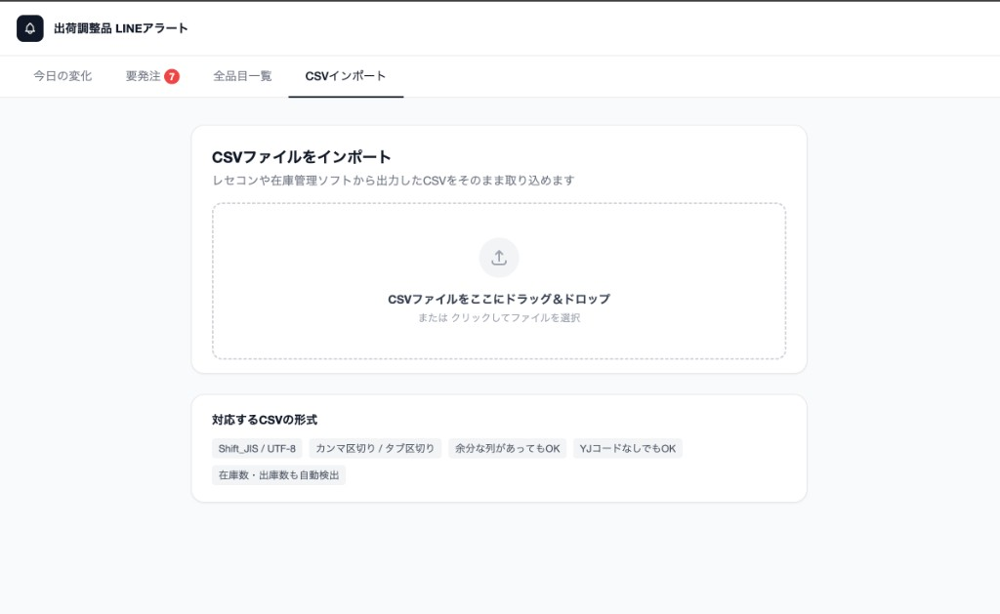
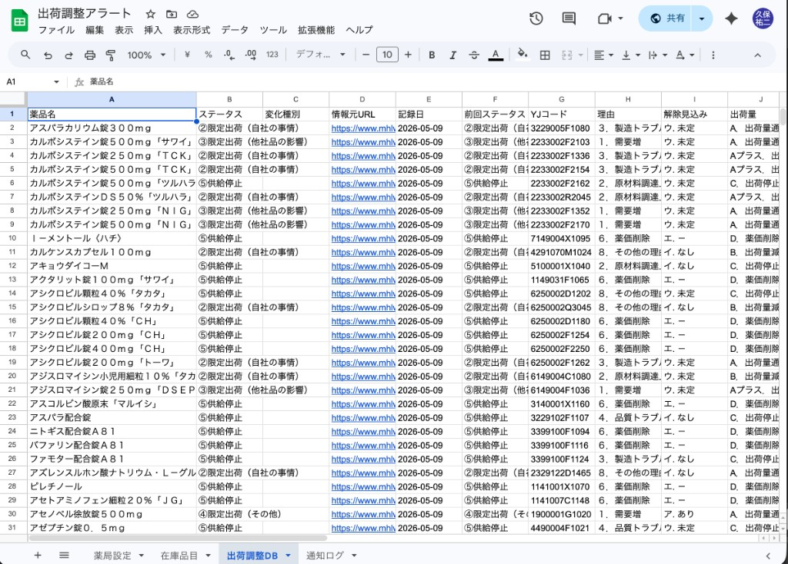
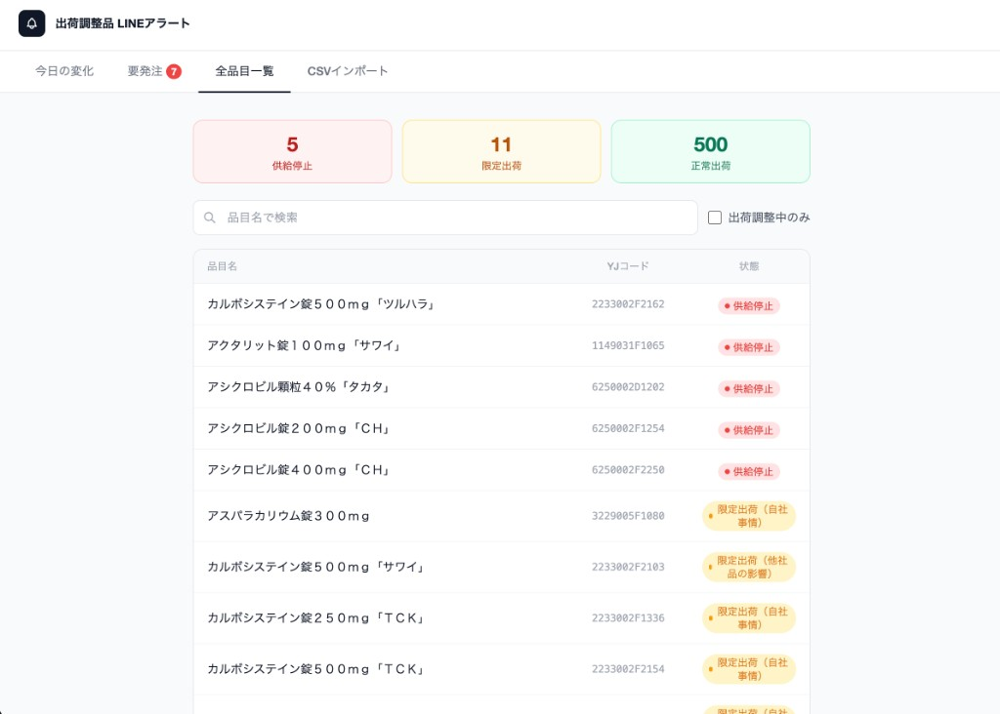
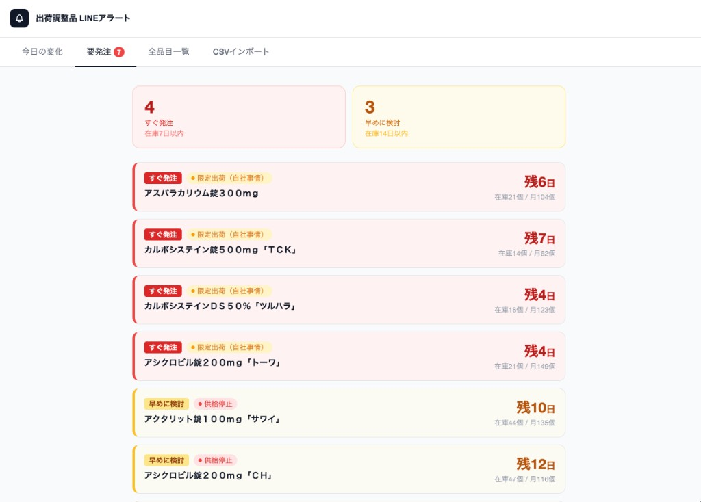
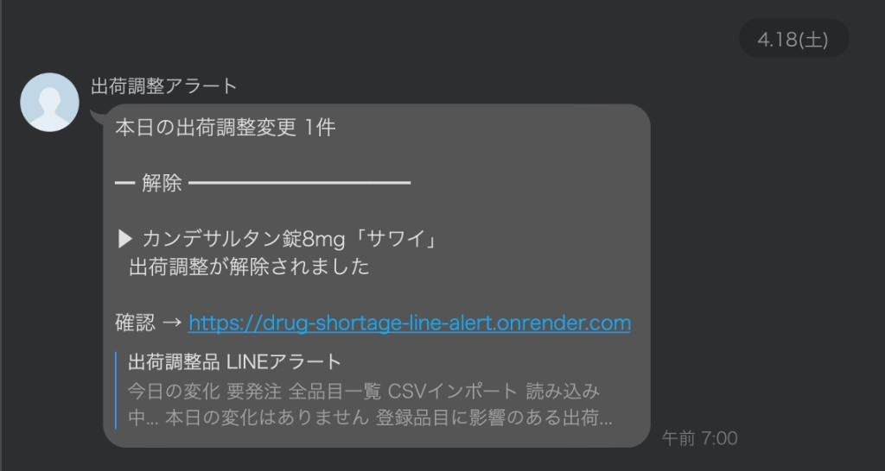

CSVインポート
薬局の在庫品目CSVをドラッグ&ドロップで取り込みます。YJコードがないCSVにも対応できるようにしています。

薬剤師が毎日サイトを確認しなくても、出荷調整の変化だけがチームのLINEに届く報告ツールです。
先に実際の画面を見せて、「CSVを入れる → データを保存する → 在庫への影響を見る → LINEで届く」という流れを説明します。
薬局の在庫品目CSVをドラッグ&ドロップで取り込みます。YJコードがないCSVにも対応できるようにしています。

厚労省Excelから必要な列を読み取り、ステータス・変化種別・YJコードなどをスプレッドシートに自動記録します。

供給停止・限定出荷・正常出荷を一覧で確認できます。検索や出荷調整中のみの絞り込みにも対応しています。

在庫数と月間出庫数から、すぐ発注・早めに検討が必要な品目を優先して確認できます。

変化があった時だけ、チームのLINEグループへ通知します。確認リンクから管理画面へすぐ移動できます。

CSVではなくExcel（.xlsx）の元データ
薬局が確認したい医薬品
node-cronで自動実行
00:00に収集 / 07:00に通知
厚労省Excel
薬局の在庫表
Node.js
スプレッドシート
LINEグループ
チーム全員
薬局が登録した医薬品
YJコードで正確に1対1照合
品名の部分一致で補助的に照合
厚労省データには多くの医薬品があり、薬局の在庫に関係ない品目まで確認するのは大変。
薬局の在庫品目と照合し、関係ある医薬品の変化だけ確認できるようにした。
毎日サイトを見に行く運用だと、忙しい日に抜けやすい。
node-cronを使い、00:00に収集、07:00に通知判定する流れを自動化した。
情報を全部送ると、重要な変化が埋もれてしまう。
新規追加・解除など、行動につながる変化だけLINEに送る。